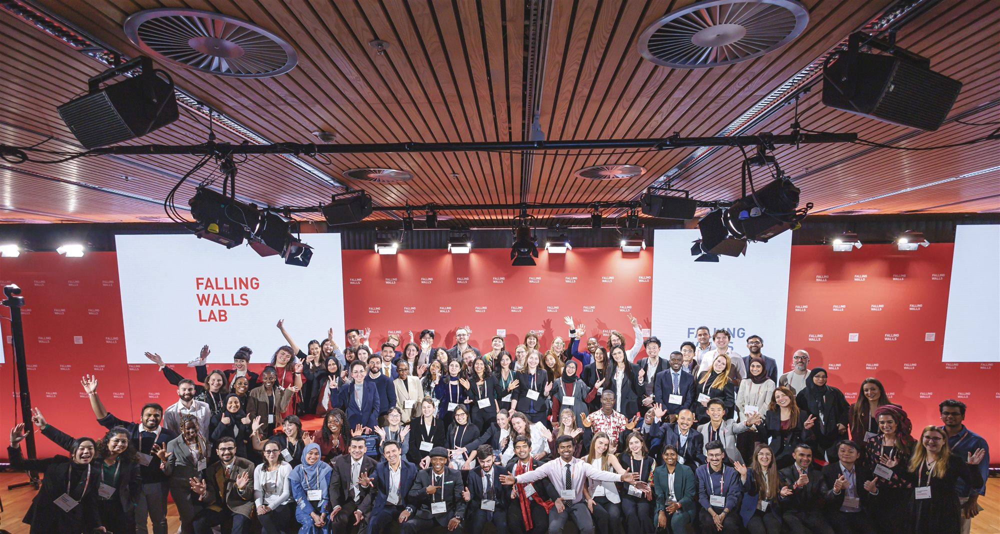
Ediciones
Cinco finales en España desde 2022. Cada una, quince ideas y un muro menos.
5ª edición29 de mayo de 2026Salón de actos del CSIC, Madrid15 finalistas
- 1er premioAntía Zilbeti GarcíaUCM · Communicative Identity in ALS
- 2º premioAna Sirvent VerdúUniversidad de Alicante · Smart E-Waste Recycling
- Premio del públicoFrancisco José Borge MorónUniversidad de Sevilla · Teaching Training
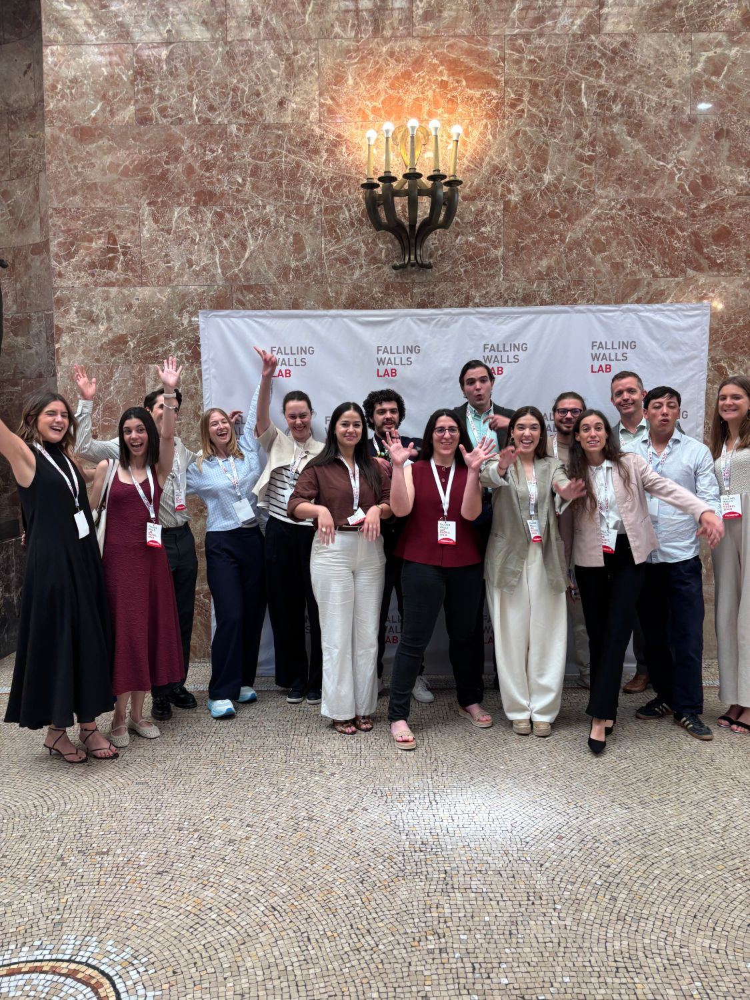
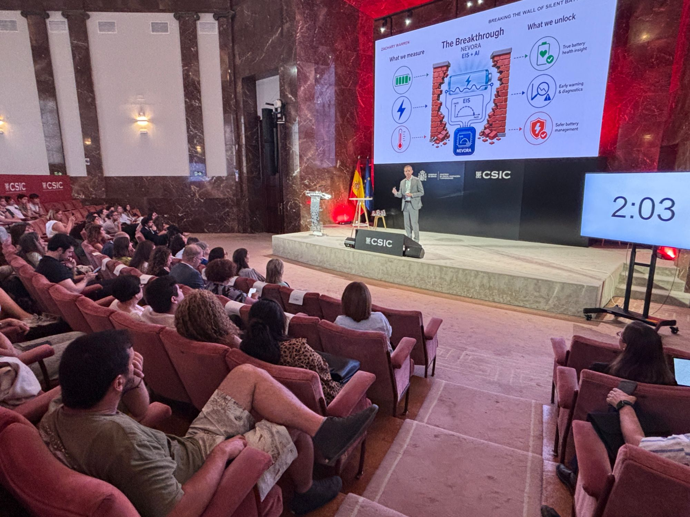

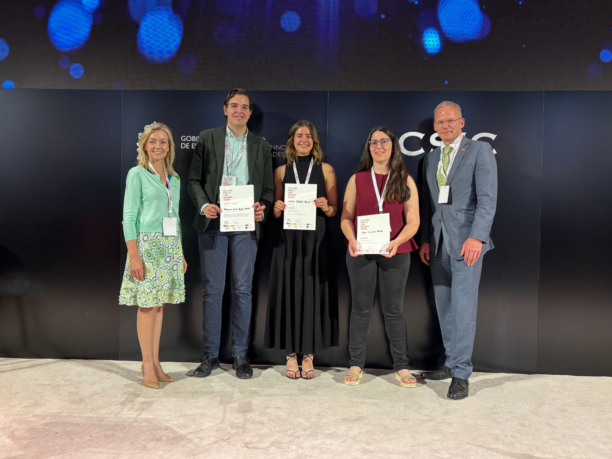

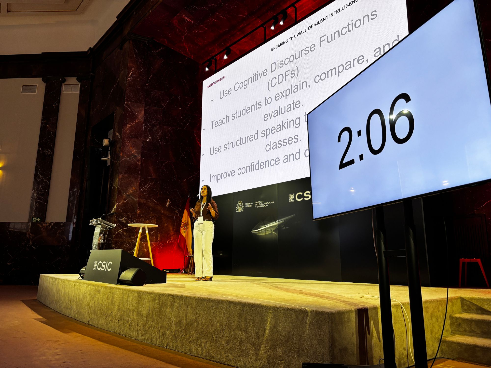
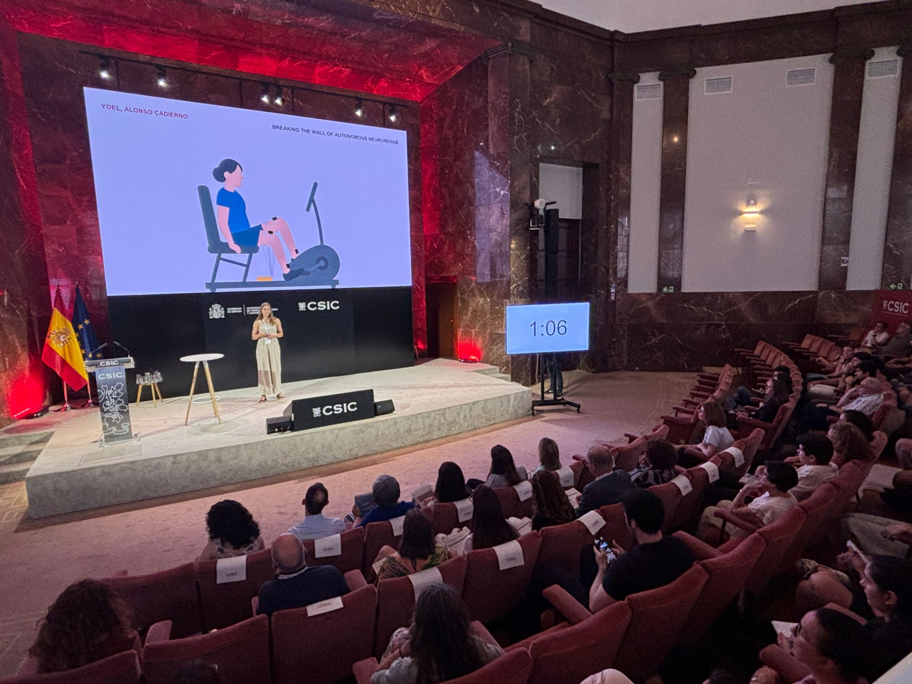

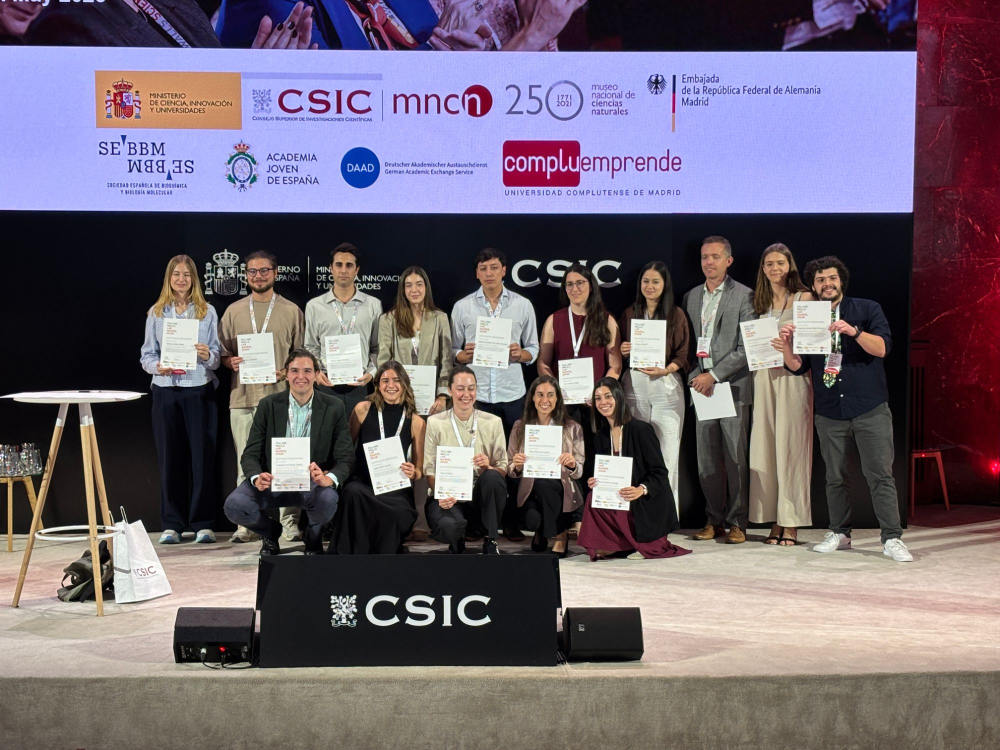
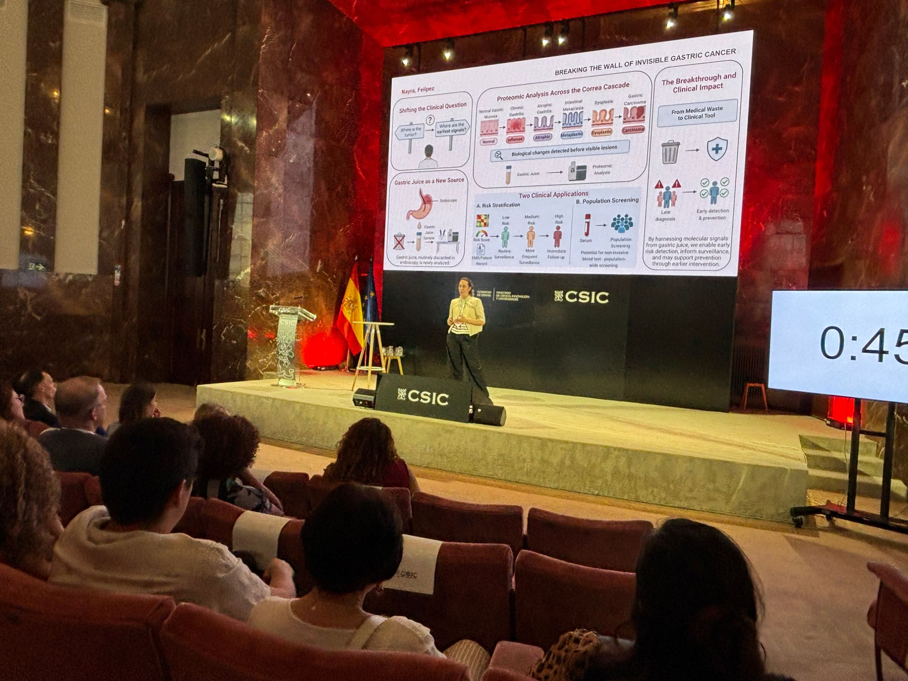
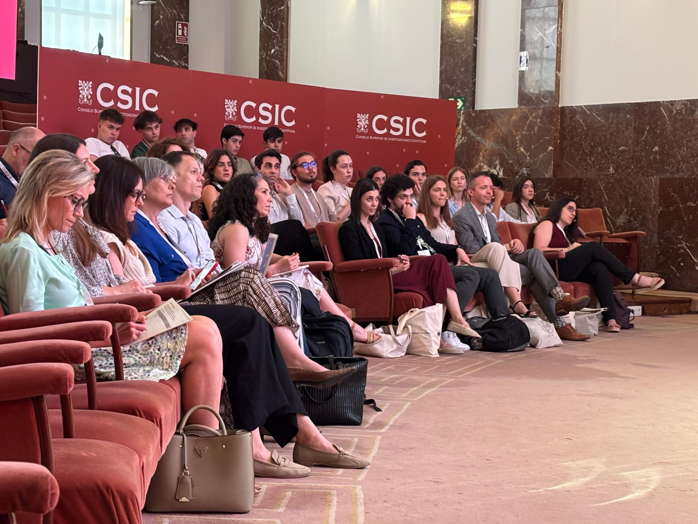
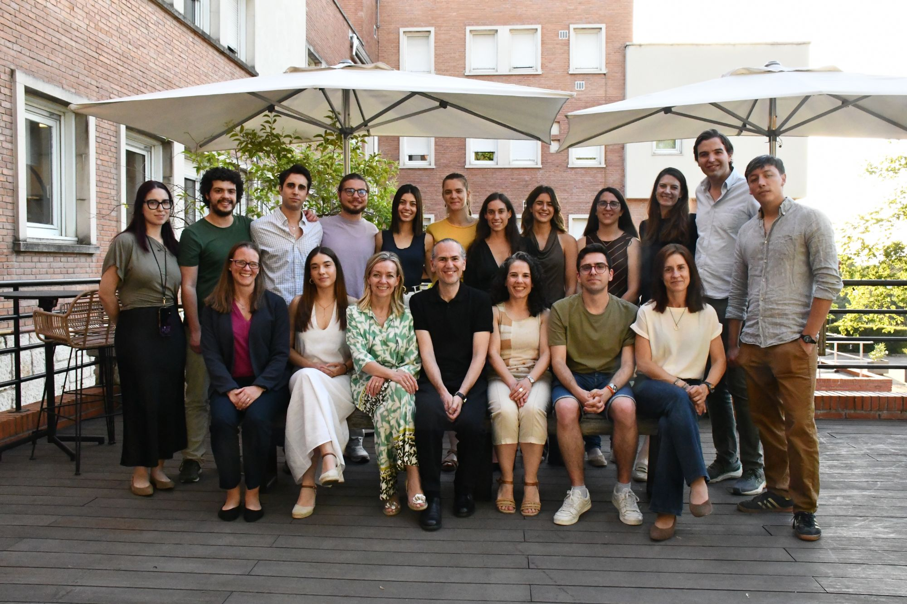
Haz clic en una foto para ampliarla
4ª edición30 de mayo de 2025Salón de actos del CSIC, Madrid
- Ganadora · 2º puesto mundial en BerlínElena Barba SarasuaUCM · CNIO · Solid Tumor Shields
- GanadoraRocío Vázquez MartínezUniversidad de Zaragoza · Cancer Treatment

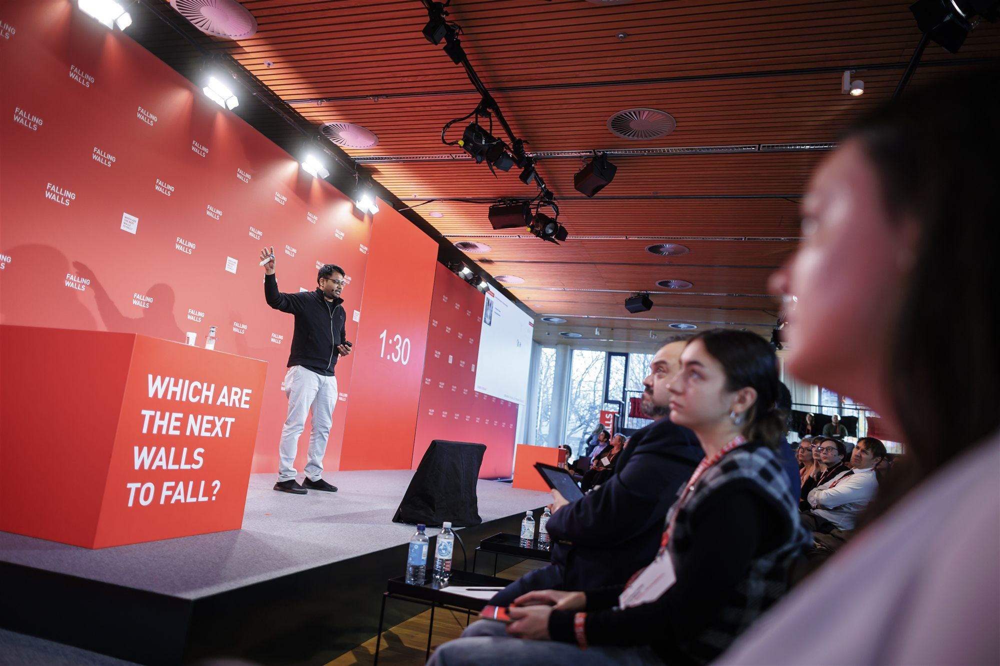
3ª edición31 de mayo de 2024Salón de actos del CSIC, Madrid
- FinalistaLucía DoyleIMDEA Materials
- FinalistaFrancis Luciano
- FinalistaAna SantanaCENIM-CSIC
2ª edición26 de mayo de 2023Salón de actos del CSIC, Madrid
- GanadorDiego Calzada FraileCNIC · Comunicación celular y vacunación
- 2º premioAna León Rodríguez
1ª edición15 de junio de 2022Museo Nacional de Ciencias Naturales, Madrid
- GanadorBorja Martínez TéllezUniversidad de Almería · Exercise Mimetics
- 2º premio y premio del públicoCristina Cadenas SánchezUniversidad de Granada
- 3er premioSandra Franco Caspueñas